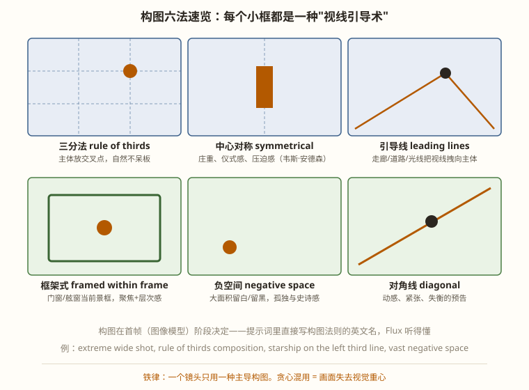

景别决定"离角色多远"，构图决定"眼睛往哪放"——AI 首帧阶段最重要的两个决策
景别的本质是观众与角色的物理距离，而物理距离直接兑换成心理距离。第 4 章给过速查表，这一章把它深化成可操作的情绪地图：
| 景别 | 心理距离 | 信息效率 | 典型情绪用途 | Flux/H3 关键词 |
|---|---|---|---|---|
| 大远景 EWS | 上帝视角，疏离 | 极低（只有环境） | 孤独、史诗、宿命感 | extreme wide shot / establishing shot |
| 远景 WS | 旁观者 | 低（环境+全身动作） | 交代空间关系 | wide shot / full shot |
| 中景 MS | 社交距离 | 中（动作+部分表情） | 叙事主力、对话 | medium shot |
| 中近景 MCU | 交谈距离 | 高（表情清晰） | 情绪开始渗入 | medium close-up |
| 特写 CU | 亲密距离 | 极高（纯表情） | 共情顶点 | close-up |
| 大特写 ECU | 侵入距离 | 极高（局部细节） | 震撼、悬疑、物哀 | extreme close-up / macro shot |
景别推进律：情绪升温 = 景别收紧（远→近），情绪释放 = 景别放开（近→远）。《归乡号》S04→S07 中景一路收到大特写再 S08 猛然拉到大远景，就是这个律的完整应用。反过来排（特写突然接远景再回特写）会产生"情绪过山车失控"的眩晕感。

六法的取舍逻辑：先问镜头情绪，再选构图——
| 角度 | 心理效应 | 关键词 | AI 可靠性 |
|---|---|---|---|
| 平视 | 平等、客观 | eye-level shot | ✅ |
| 仰拍 | 崇高、威严、压迫 | low angle shot | ✅ |
| 俯拍 | 渺小、脆弱、审视 | high angle shot | ✅ |
| 顶拍（上帝视角） | 全知、设计感、疏离 | top-down / bird's-eye view | 🟡 人像易怪 |
| 荷兰角（倾斜） | 失衡、疯狂、危机 | dutch angle / tilted frame | 🟡 模型爱"扶正"，需强调 |
| 过肩 | 对话临场感 | over-the-shoulder shot | 🟡 双人一致性风险 |
同一个舰长：仰拍 = 统帅气质，俯拍 = 三百年的重担压肩，荷兰角 = 警报响起时的世界倾斜。改一个关键词，情绪就变——在首帧阶段做 A/B 测试只要 30 秒。
shallow depth of field, f/1.8）：主体清晰背景奶油虚化。特写和情绪镜头的标配，把观众视线焊死在主体上。deep focus, f/11）：前后景都清晰。大远景和需要"读环境"的镜头用。bokeh）：夜景/舱内灯光镜头的氛围神器，配 anamorphic 关键词出椭圆光斑更"电影"。情绪目标：全片共情顶点，观众要"进入"舰长的感受。
景别：大特写（ECU）——情绪顶点对应侵入距离，且大特写是 AI 最稳的景别（脸大 token 多，第 14 章脸崩专题）。
构图：三分法——眼睛放在上三分之一线交叉点，下方留负空间；不选中心对称（太"证件照"，杀死生动感）。
角度：平视微仰——保留尊严感，不带俯视的怜悯。
景深：f/1.4 极浅景深，睫毛清晰、背景全虚——观众无路可逃，只能看那双眼睛。
最终首帧提示词：extreme close-up, the captain's eye on the upper third intersection, vast negative space below, slight low angle, f/1.4 shallow depth of field, a tiny blue planet reflected in the iris + 风格基座。
每个参数都有出处，没有一个是"凭感觉"。